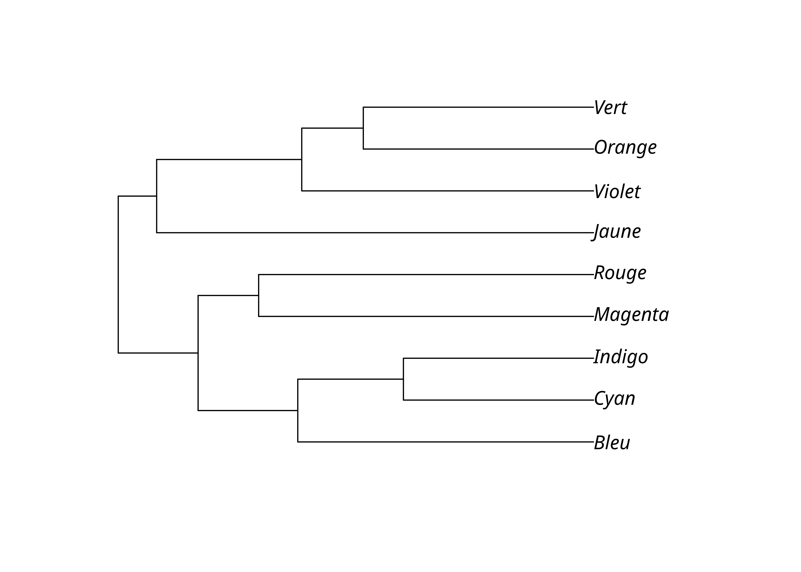

2 Méthodes par distance
Les méthodes par distance sont simples à comprendre et à implémenter car elles reposent en général sur un algorithme qui ne compare pas les arbres possibles mais construit un arbre unique.
Toutefois, elles ont plusieurs faiblesses qui font qu’elles sont d’un usage limité aujourd’hui:
- elles ne distinguent pas les innovations communes (synapomorphies) des rétentions communes (symplésiomorphies) et il y a donc une perte d’information cruciale;
- elles peuvent grouper ensemble de manière erronnée des langues conservatrices qui ont subi peu de changements;
- les langues qui ont subi de nombreuses innovations originales (autapomorphies) peuvent se retrouver artificiellement rejetées sur des branches extérieures.
Les méthodes par distance ne peuvent donc pas être recommandées pour l’analyse phylogénétique.
2.1 Calcul des distances
Commençons par importer de nouveau la matrice de traits que nous avions sauvegardées.
Il est trivial de calculer la distance observée, ou p-distance, sur une telle matrice. Il suffit de calculer pour chaque paire de langues le rapport entre nombre de caractères différents et le nombre de caractères total avec la fonction dist.hamming(). La diagonale des distances de chaque langue avec elle-même est bien sûr 0, et la matrice de distance est symmétrique, on peut donc se passer d’afficher l’un des deux triangles.
lx_dist <- dist.hamming(lx_phy)Code
| Magenta | Cyan | Jaune | Vert | Violet | Orange | Rouge | Bleu | Indigo | |
|---|---|---|---|---|---|---|---|---|---|
| Magenta | 0.00 | ||||||||
| Cyan | 0.22 | 0.00 | |||||||
| Jaune | 0.29 | 0.27 | 0.00 | ||||||
| Vert | 0.26 | 0.27 | 0.25 | 0.00 | |||||
| Violet | 0.27 | 0.25 | 0.26 | 0.18 | 0.00 | ||||
| Orange | 0.25 | 0.27 | 0.22 | 0.15 | 0.16 | 0.00 | |||
| Rouge | 0.20 | 0.27 | 0.31 | 0.29 | 0.27 | 0.28 | 0.00 | ||
| Bleu | 0.20 | 0.18 | 0.27 | 0.24 | 0.21 | 0.20 | 0.20 | 0.00 | |
| Indigo | 0.22 | 0.12 | 0.25 | 0.28 | 0.25 | 0.26 | 0.23 | 0.16 | 0 |
On peut alternativement afficher la matrice des similitudes en retranchant les distances de 1, voir des pourcentages en multipliant le résultat par 100. On obtient alors une matrice semblable à ce qu’on voit en lexicostatistique.
lx_sim_m <- (1 - as.matrix(lx_dist)) * 100Code
| Magenta | Cyan | Jaune | Vert | Violet | Orange | Rouge | Bleu | Indigo | |
|---|---|---|---|---|---|---|---|---|---|
| Magenta | 100.00 | ||||||||
| Cyan | 78.05 | 100.00 | |||||||
| Jaune | 70.73 | 73.17 | 100.00 | ||||||
| Vert | 74.15 | 72.68 | 75.12 | 100.00 | |||||
| Violet | 73.17 | 74.63 | 74.15 | 82.44 | 100.00 | ||||
| Orange | 75.12 | 72.68 | 78.05 | 85.37 | 84.39 | 100.00 | |||
| Rouge | 80.49 | 73.17 | 68.78 | 71.22 | 73.17 | 72.20 | 100.00 | ||
| Bleu | 80.49 | 81.95 | 72.68 | 76.10 | 79.02 | 80.00 | 79.51 | 100.0 | |
| Indigo | 78.05 | 88.29 | 75.12 | 71.71 | 74.63 | 73.66 | 77.07 | 83.9 | 100 |
2.2 UPGMA
L’algorithme de classification UPGMA (Unweighted pair group method with arithmetic mean) est le plus basique et le moins bon pour les classifications génétiques. Cette méthode présuppose notamment une «horloge moléculaire», c’est-à-dire que la vitesse de changement était constante, ce qui est faux en biologie comme en linguistique. Le résultat est un arbre dit ultramétrique où toutes les langues sont alignées au lieu d’être placées en fonction du nombre de changements avec des branches de longueur variées.
Néanmoins cette méthode est simplissime: on groupe les taxons les plus proches ensemble, et la distance du groupe obtenu aux taxons restants est recalculée en faisant la moyenne des distances des éléments groupés, et on recommence jusqu’à n’avoir plus que deux groupes.
lx_upgma <- upgma(lx_dist)
lx_upgma
Phylogenetic tree with 9 tips and 8 internal nodes.
Tip labels:
Magenta, Cyan, Jaune, Vert, Violet, Orange, ...
Rooted; includes branch lengths.On obtient un arbre unique raciné qu’on peut facilement visualiser. Il est néanmoins souvent nécessaire d’ajuster les axes afin d’afficher correctement les étiquettes des feuilles de l’arbre.
library(ggtree)
upgma_tree <- ggtree(lx_upgma) +
geom_tiplab() +
xlim_tree(0.14) +
theme_tree()
upgma_tree
2.3 Neighbour joining
La méthode de neighbour joining est plus sophistiquée que celle de UPGMA mais reste néanmoins simple. Elle s’en distingue par la prise en compte dans l’algorithme de la distance entre toutes les paires de taxons, et non seulement entre les paires les plus proches. Elle produit un arbre non raciné et non ultramétrique.
lx_nj <- NJ(lx_dist)
nj_tree <- ggtree(lx_nj, layout = "daylight") +
geom_tiplab2() +
xlim(-.2, .09) +
ylim(-.17, .12) +
theme_tree()
nj_tree
On peut bien sûr artificiellement raciner l’arbre, mais c’est rarement une bonne idée. C’est néanmoins parfois nécessaire pour visualiser un grand nombre de langues.
ggtree(lx_nj) +
geom_tiplab() +
xlim_tree(0.21) +
theme_tree()2.4 NeighborNet
L’algorithme NeighborNet permet d’obtenir non pas un arbre mais un réseau qui montre notamment les conflits dans les données.
lx_nn <- neighborNet(lx_dist)
lx_nn
Phylogenetic tree with 9 tips and 19 internal nodes.
Tip labels:
Magenta, Rouge, Bleu, Indigo, Cyan, Jaune, ...
Unrooted; includes branch lengths.library(tanggle)
nn_nx <- ggsplitnet(lx_nn) +
geom_tiplab2() +
xlim(-.15, .13) +
ylim(-.16, .1) +
theme_tree()
nn_nx